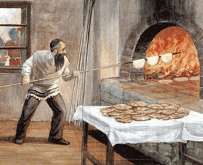

Of Matza and Truly Bitter Herbs
The following two periods in young Heishke’s life – the purges of the 1930’s and the period immediately after WWII – are testaments to the indomitable Jewish spirit that managed to survive the crushing under the Soviet boot and the smokestacks of the Nazi crematoria. * Dedicated to my grandfather, R

CHANGING OF THE GUARD
The purges spearheaded by the infamous Yezov (head of the NKVD under Stalin) spread through cities and towns at the end of the 1930’s. Hundreds of thousands of people were taken from their homes at night, arrested, exiled, tortured and shot.
The bloodbath did not skip over our town in the Ukraine. Nearly all the houses in the town had the same poor, pathetic look, primitive and gray. However, on one of the side streets there was a matching pair of houses that were different than all the other houses in their fine construction – the walls, the red bricks with nice windows, surrounded by budding trees.
These dwellings aroused unpleasant feelings on the part of passersby whose glances pierced the houses with a glint of anger in their eyes. Two senior officials in the Soviet leadership of the town were the proud inhabitants, the head of the town council (the “Gorsoviet”), and the director of the regional council (the “Rayispolkom”). I remember their names – Haidak and Shiroka. The Jews who passed by these abodes glanced sideways at them and silently sent their wishes to those who dwelt therein, hoping that those knockers (Yid. pronounced with a hard “k” – a derogatory term for big shots such as government appointed functionaries) would meet an untimely death or would sink ten feet into the ground.
Since the Red Terrors operated late at night, one morning people noticed that the windows in the two houses were dark and closed and the doors were perpetually closed with nobody entering or leaving. It was as though Haidak and Shiroka had disappeared into the earth. Haidak’s wife could be found in a tumbledown hut at the edge of town. The Jews who had previously wished them the worst now looked with compassion at her brats that suddenly seemed like frightened mice. In short, the two red-bricked houses were cleaned and readied for two new “knockers,” who were brought in from the district capitol.
SPRING ARRIVED AND THE RAV RETURNED
Along with the two former rulers of the town, the casualties of the purge included some smaller fish. A few Jews disappeared – R’ Zerach the shochet who was old and limped; Yaakov Lemel, the gabbai of the former shul which the authorities had closed years before; Chatzkel the storekeeper and a few other so-called counter-revolutionaries. The unbelievable thing was that the biggest anti-Soviet criminal of them all, my grandfather R’ Mendel, the rav of the city, was not arrested, although he always kept a bag with his tallis and t’fillin at the ready.
He took that bundle when he finally fled in the middle of the night. He went to a nearby town and from there, went to his house in Leningrad. The Jews of our town felt bereft without the rav, R’ Mendele. A few months went by and the Red Terrors did not even stick their noses into his house. The miracle was tremendous given the fact that although the rabbinate and the propagation of Judaism were underground, it was no secret to the angels of death of the NKVD. Nevertheless, they forgot about him even though men such as they did not forget things like this.
After a few months of exile in Leningrad, R’ Mendele returned. His wife and children who had barely managed to convince him to leave town, were not pleased by his return. Fear of arrest still hovered in the air and was reflected in many eyes. There were many things pulling him back but the main thing was the fact that it would soon be Pesach and matzos were needed for several dozen Jewish families. Without R’ Mendele, there would be no matzos. He was the one who, in recent years, arranged the secret baking of matzos in his home.
Upon his return, R’ Mendele did not sleep in his house for several weeks as per his family’s request. But after that, he made his habitual dismissive motion with his hand (often accompanied by the Yiddish expression “veis ich vos!” (Yiddish equivalent of “whatever”) and went back to sleeping at home. And not for naught, since during the evening hours he accomplished many things that needed to be done in secret.
THE STAMMERING MESSENGER
A few weeks before Pesach, R’ Mendele’s loyal assistant discreetly made his way to his house. He was a person who was always willing to go through fire and water in order to carry out various missions or simply to help the rav to the best of his ability. His name was Reuven Karasik. He was a short man with a little beard who stammered badly when he spoke to the rav even though he had no speech impediment. It was just the tremendous awe he felt for R’ Mendele that made the words come out as they did.
R’ Mendele understood the purpose of Reuven’s visit. He wanted to know whether R’ Mendele would be baking matzos for the Jews of the town, but he did not have the courage to speak to the rav clearly about something as dangerous as baking matzos. With a bashful smile he began to speak:
“Ai, R’ Mendele, may Hashem give you health and long life … It is almost Erev Pesach. This year, we are very worried, may Hashem protect you … but R’ Nachum Kaplan and R’ Isser Baroler asked me to ask the dear rav, nu, whether we can hope, nu, that there will be matzos …”
R’ Isser and R’ Nachum were two shomer-Shabbos Jews in town who helped R’ Mendele with all his secret activities in spreading Torah and the fulfillment of mitzvos. They had sent Reuven to feel out the rabbi as to whether he was willing to make a small secret oven, since Reuven was always R’ Mendele’s right hand man in the matza baking.
R’ Mendel listened to him with a smile and did not respond. He merely took his arm in his own and accompanied him to the bedroom.
THE SECRET IS REVEALED
Upon entering the bedroom, Reuven saw that half the room was hidden under a large white tablecloth. R’ Mendele moved the curtain and Reuven saw something that caused his eyes to pop. There was a large sack of flour covered with tin, several dozen new rolling-pins, new molds, sharpened wheels to make holes and even new wooden rollers and one long baker’s shovel, and another one … It was an entire matza baking operation that R’ Mendele had managed to prepare on his own in the evenings.
Reuven was so overcome that he was temporarily speechless. Upon recovering he exclaimed, “Oy, Rebbi!” and he grasped R’ Mendele’s hand and kissed it. When he had calmed down he mustered the courage to complain, “But why? Why didn’t the rav tell me? I so much want to help! How did the rav do this all by himself? Oy, oy!”
R’ Mendele patted his shoulder and said, “Reuven, I thought a great deal about whether to include you in this work that entails great danger since I knew that you would not refuse. Don’t worry R’ Reuven. With Hashem’s help, there will be a small matza bakery in my house and you will be my partner in the baking of the matzos.”
R’ Mendele’s wife and two daughters prepared for the matza baking with trembling hearts and a flutter of joy – both emotions glinted and danced in their eyes. His wife did the kneading and the daughters did the rolling together with another few observant women and men. R’ Mendele lit the oven and together with Reuven and Nachum organized the entire operation.
BURNING THE MATZA
Up until that point, Reuven had never worked so hard and with such enthusiasm. Of course, every knock at the door made their hearts skip a beat, and R’ Mendele would run to the door to see who was there and whether it was possible to let him in. But during the two days of the matza operation it was, as Reuven put it, “Halevai vaiter” (if only we merit to continue).
At the end of the second day, the few rollers and their helpers parted with warm wishes and smiling faces from R’ Mendele and his family. R’ Mendele and Reuven, bathed in sweat and exultation, thanked Hashem with tremendous satisfaction. They did so verbally and even more so, with depth of feeling in their hearts. Afterward, for many hours, they collected and arranged all the Pesach baking utensils – the molds, the rolling-pins, the wooden rollers and the other things and hid them under a large tablecloth behind a curtain in R’ Mendele’s bedroom.
Later that night, Reuven also left, albeit against his will, after R’ Mendele finally persuaded him to leave and the rest of the family collapsed into bed in sweet slumber. But R’ Mendele was still not ready to sleep. His heart overflowed with thanks for the way things had gone thus far and with prayers for the future. He was mainly satisfied that the two days of the operation had gone without a hitch or undo fear.
He took out a Likkutei Torah and began learning a maamer on the parsha. The words with the special tune of the maamer calmed him but he finally drifted off to sleep. He awoke suddenly to the sound of the banging of the doorknob.
At first, he was frightened. His heart sank as he thought how this was “their” usual time. Oy, he might have to take his tallis and t’fillin and run through the yard and over the fence, but the knocks at the courtyard door assuaged his fear. In general, people used the knob on the outer door and only those who were closer, more heimish, also knocked on the courtyard door as a precaution.
R’ Mendele assumed it must be Reuven who had returned because he had forgotten to say or take something. He went to the courtyard and approached the door. It was a cloudy, dark night and he could not make out who the “guest” was as he peered through a large crack in the door.
MYSTERY GUEST
For a moment, the knocking ceased and R’ Mendele thought of going back in, but then the gentle knocks resumed. R’ Mendele decided he had to see who it was. In a low voice he called out, “Who is it?” He was taken aback when he heard a soft, feminine voice answering him in Russian, “I ask you, my friend Mendel Yevesyevitch, do not be afraid and please open the door. I must speak to you.”
R’ Mendel was even more astonished. How did she know his name? How did she know that she had to knock on the outer door? Who was she and what did she want?
When he opened the door, the woman came in quickly. The yard was illuminated somewhat by the kitchen window and R’ Mendele saw a young, unfamiliar woman who was well-dressed. She immediately said she hoped she would be allowed to enter the house.
As they walked in, R’ Mendele felt he had to ask, “Please tell me, who are you and how did you know …”
The woman finished his sentence, “My name and my father’s name, right? That is what you wanted to know? Nu, you know that at times like these it is not advisable to ask certain questions and not everything can be answered. You are a smart man.”
She smiled and with a wink she continued, “Excuse me, there is one thing that you must know now. I will tell you something that will answer many questions. My husband and I are the new tenants in the ‘twin red houses,’ as you refer to them. So you probably know my name and if not, you will soon find out.”
A chill went through R’ Mendel’s entire body. This was the wife of one of the new “knockers,” aha!
She took note of his great surprise and said soothingly, “I ask of you, do not be afraid. Consider me a friend of yours. It is worthwhile that my husband and I be considered your friends. My husband is sitting in a car on the corner and there is no need to ask you to keep my visit an absolute secret. It is better for all of us.”
WHEN A JEW NEEDS TO KNOW
“Yes, yes, but what is the purpose of this friendly visit?” asked R’ Mendele. The woman smiled once again, “You are right, my friend. The point is that my mother lives with me, the dearest mother in the world – a ‘Yiddishe mama,’ (said in a Volhynian-Yiddish accent).” R’ Mendel’s heart skipped a beat. A Jewish woman with one of the new chiefs of the city! But what did she want of him?
“My husband also respects and loves my mother dearly, but she is a believer and she needs three kilograms of matza for Pesach. Who can help her if not Rabbin Mendel? I will pay you whatever you ask.”
R’ Mendele was so moved that tears came to his eyes and in a choked voice he spoke from the depths of his heart, “Dear daughter, dear Jewish daughter. Of course I will give you the matzos. And what are you saying – will I take money from you?! Tell your mother that it’s a gift from me. If it is possible, we would be happy to have your mother for the two s’darim on the first two nights.”
There were tears in the woman’s eyes too and she said, “I thank you from the bottom of my heart for the invitation, but it is a very delicate matter. We shall see …”
Before she left she said in her accented Yiddish, “You are probably wondering how I knew that I could get matza from you. What a Jew needs to know, he will manage to find out.”
"Of Matza and Truly Bitter Herbs." Beis Moshiach, no. 829 (March 30, 2012).